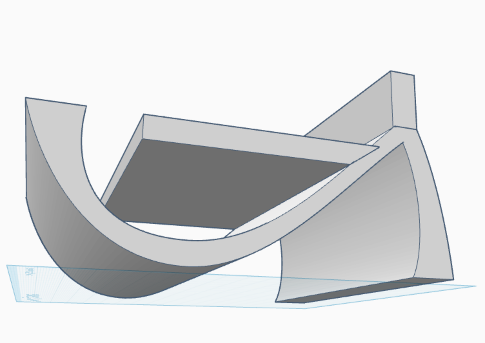
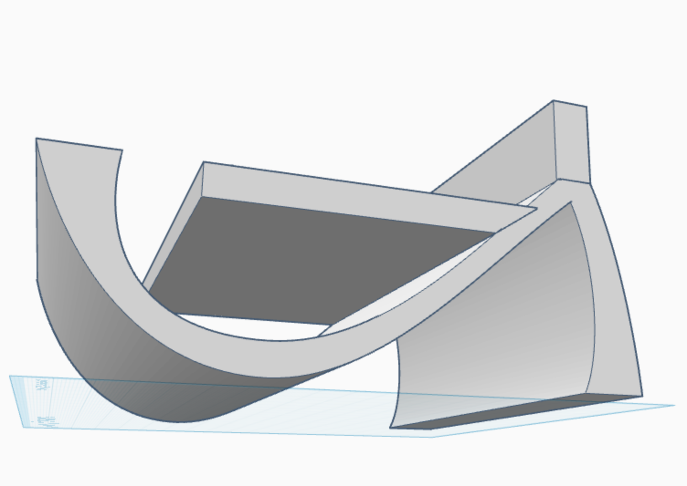

Audio Interface Desk Shelf
 



The Interface Desk Shelf is an innovative solution born out of a constant issue I faced as a bedroom musician: the instability of audio interfaces caused by the pull of heavy guitar and instrument cables. During recording sessions, my interface was prone to being yanked off my desk by the cable connecting my instruments to my computer, disrupting my workflow and risking potential equipment damage. This 3D-printed product is designed specifically to securely hold a small 175 x 47.5 x 98.8 mm interface in place while also helping users maintain an organized and neat workspace. The design allows for quick and easy access to the interface and all its inputs, knobs, and buttons, and also includes a lower storage compartment for things like picks, cables, capos, or adapters. Anchors on the top platform ensure that the interface remains firmly in place during use, even when tension is applied to the connected cables. The minimalistic yet functional approach to this design makes this product ideal for compact setups, where space is limited and efficiency is essential. With this product, I aimed to create a solution that enhances both the accessibility and efficiency of this audio and home studio essential.